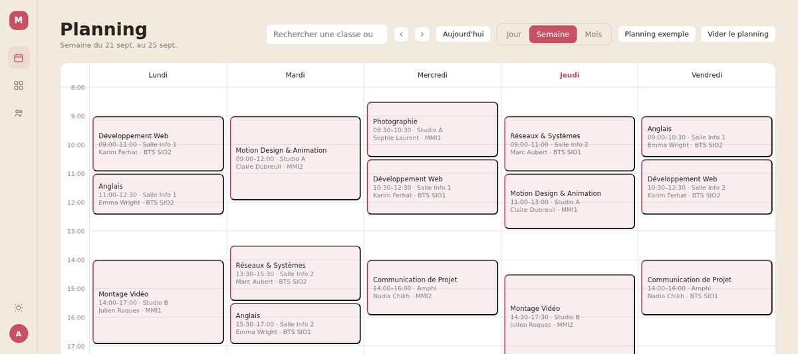

Projets personnels
Ce que j'ai construit : un site en production, une application mobile publiée sur les deux stores, une application de planning en cours pour les écoles MediaSchool, et un jeu en Python.
CRP-Assurance.com
Site pro fait de A à Z pour un cabinet d'assurance : conception, intégration, mise en ligne, hébergement et nom de domaine.
Voir le siteSYNCRO
Appli mobile full-stack publiée sur l'App Store et Google Play : front en Flutter, back en Next.js relié à une base SQL, API REST. Son site vitrine appsyncro.fr est aussi en production.
Voir le détailPla'Net
Application web de planning pour les écoles MediaSchool, en cours : prototype en JavaScript, puis application Symfony sur une base MariaDB de onze tables.
Voir le détailMission Orion
Un jeu spatial fait en Python avec pygame, compilé en WebAssembly pour tourner directement dans le navigateur, sans rien installer.
JouerSYNCRO, en production sur les deux stores
SYNCRO est une application de gestion de plannings d'équipe, développée pour Suitime pendant mon stage de juillet-août 2026. Chaque membre saisit ses disponibilités, le responsable valide et verrouille la semaine. Invitations par QR code, notifications en temps réel, suivi des heures.
J'ai travaillé sur toute la chaîne : l'application Flutter (Android et iOS), le back-end Next.js avec sa base SQL et son API REST, le site vitrine appsyncro.fr, et la mise en production : signature de la clé Android, notifications push APNs et Firebase, déploiement serveur et publication sur les deux stores.


Pla'Net, en cours de développement
Pla'Net est une application web de planning pour les écoles du groupe MediaSchool : IRIS, ECS et IEJ. Elle doit permettre de placer les séances de chaque classe, avec leur intervenant, leur salle et leur matière, et de les consulter par jour, par semaine ou par mois. Je l'ai commencée en septembre 2026, au début de ma deuxième année de BTS.
1. Un prototype pour valider les écrans
Avant d'écrire la moindre table, j'ai construit un prototype en HTML, CSS et JavaScript sans dépendance : connexion avec deux rôles (administration et utilisateur), gestion des cours, des professeurs, des élèves et des salles, planning jour, semaine et mois, recherche par classe ou par professeur, cours ponctuels ou répétés chaque semaine, thème clair et sombre. Toutes les lectures et écritures passent par trois fonctions, pour pouvoir brancher la vraie base sans toucher au reste.
2. La base de données
La base MariaDB compte onze tables : campus, classes, niveaux, spécialités, cursus, matières, intervenants, salles, séances, utilisateurs, et une table de liaison entre séances et classes, parce qu'un même cours peut réunir plusieurs classes. Quelques choix :
- Clés étrangères partout : une séance ne peut pas pointer vers une salle ou un intervenant qui n'existe pas.
- Un champ « obsolète » plutôt que des suppressions : une salle fermée ou une classe terminée disparaît des listes sans casser l'historique des plannings.
- Un identifiant de série sur les séances, pour modifier d'un coup toutes les occurrences d'un cours répété.
- Une couleur par matière, stockée en base, pour que le planning se lise d'un coup d'œil.
3. L'application Symfony
L'application passe en Symfony avec des gabarits Twig : une barre de navigation à gauche, des filtres campus, classe et spécialité en haut, et les vues accueil, planning et jour. La connexion utilise le composant de sécurité de Symfony : formulaire protégé par jeton CSRF, mots de passe hachés, et toutes les pages réservées aux utilisateurs connectés. Prochaine étape : relier les filtres et le planning à la base avec Doctrine.
